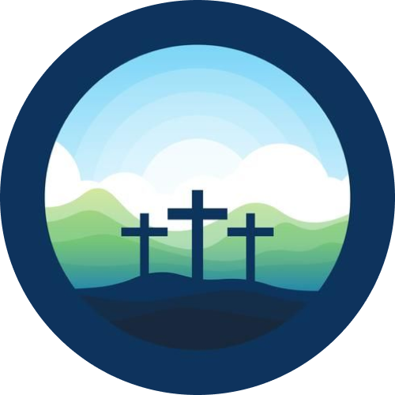

LICENCIATURAO que é licenciatura?Licenciatura é um tipo de graduação universitária cujo objetivo é formar profissionais
para o exercício da docência em determinada área do conhecimento, como, por exemplo,
licenciatura em matemática, licenciatura em biologia, licenciatura em história,
entre outras. Além de fornecer uma formação sólida na área específica, a licenciatura também oferece
disciplinas e estágios que preparam o
futuro professor para atuar na sala de aula, desenvolvendo habilidades como planejamento de aulas, avaliação de
desempenho dos
alunos, uso de tecnologias educacionais, entre outras.
A conclusão de uma licenciatura é um requisito para o exercício da profissão de professor em instituições de
ensino fundamental,
médio e superior, e pode ser obtida em instituições de ensino superior públicas ou privadas.
SociologiaLicenciatura em sociologia é um curso de graduação
que habilita o profissional para o exercício da
docência nos ensinos fundamental e médio, podendo
também atuar no ensino superior, em instituições
públicas e privadas. O licenciado em sociologia
também pode desenvolver projetos de pesquisa,
consultoria, assessoria e extensão em temas sociais.
O objetivo do curso é formar profissionais capazes de
analisar a realidade social através de métodos
científicos e de transmitir esse conhecimento de
forma autônoma e dinâmica.
O licenciado em sociologia também pode
desenvolver projetos de pesquisa, consultoria,
assessoria e extensão em temas sociais. No curso de
licenciatura em sociologia, o estudante terá
disciplinas sobre antropologia, ética, filosofia
e sociologias diversas, além de matérias ligadas à
educação, como didática e pedagogia.Grade
curricular:Tempo de duração do curso:
Em geral, A licenciatura e o bacharelado de sociologia
tem o mesmo tempo de duração que é em média de 4 anos,
com 8 semestres de estudo.Mercado de Trabalho:
O licenciado em sociologia pode atuar em diversas
áreas do mercado de trabalho, como docência,
pesquisas, assessoria e consultoria, elaboração e
revisão de textos, criação de políticas públicas,
coordenação de projetos sociais.Habilidades necessárias:
● Sensibilidade
● Criatividade
● Análise e interpretação de dados
● Olhar crítico, analítico e curioso
● Facilidade para avaliar informações e realizar pesquisas
● Domínio de técnicas e metodologias de coleta
● Capacidade de comunicação oral e escritaMédia salarial:
A média salarial de um licenciado em sociologia depende da área de atuação, do nível de
formação e da região do país. Em São Paulo, por exemplo, a média salarial de um professor de
sociologia é de R$ 3.350,00 a R$ 4.584,09, pois também depende se ele é de ensino médio ou
superior.

TeologiaA licenciatura em teologia é uma modalidade de graduação que forma professores para dar
aulas
de ensino religioso e ética em escolas de ensinos fundamental e médio. A licenciatura em
teologia é diferente do tecnólogo e do bacharelado, a licenciatura que forma profissionais para
atuar como líderes religiosos, pesquisadores, consultores ou assessores de grupos religiosos e
ecumênicos.
Após a conclusão da Licenciatura em Teologia, os graduados estão inscritos para lecionar a
disciplina do ensino religioso em escolas públicas ou privadas. Eles podem atuar principalmente
como professores.
Como em tecnólogo e bacharelado na licenciatura, os alunos têm a oportunidade de estudar
disciplinas teológicas, como estudos bíblicos, teologia sistemática, ética religiosa, história da
igreja e outras áreas de relação.Habilidades necessárias:
● Aptidão para o ensino
● Comunicação
● Liderança
● Interesse e respeito
● Capacidade de análise
● Espírito crítico e reflexivo
● Sensibilidade
● Boa interpretação de texto
● Multidisciplinaridade
● EmpatiaTempo de duração do curso:
Em geral, A licenciatura em teologia tem o mesma média de duração
que em tecnólogo e bacharelado, tendo então uma média de 4 anos,
com 8 semestres de estudo.Mercado de Trabalho:
O mercado de trabalho para um licenciado em teologia é amplo,
o profissional pode trabalhar em lugares como igrejas e
instituições religiosas, instituições de ensino, ONGs e
instituições governamentais; atuando principalmente como um
professor.Média salarial:
Os salários variam de acordo com a área de atuação e a experiência
profissional, no Brasil por exemplo a média é de R$3.000,25
aproximadamente R$6.000,00 dependendo da região.Grade
curricular: